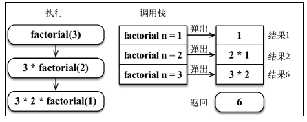

递归 递归是一种解决问题的方法，它从解决问题的各个小部分开始，直到解决最初的大问题。递归通常涉及函数调用自身。
每个递归函数都必须有基线条件，即一个不再递归调用的条件（停止点），以防止无限递归。
1 2 3 4 5 6 7 8 function understandRecursion (doIunderstandRecursion ) { const recursionAnswer = confirm ('Do you understand recursion?' ); if (recursionAnswer === true ) { return true ; } understandRecursion (recursionAnswer); }
计算一个数的阶乘 数 n 的阶乘，定义为 n!，表示从 1 到 n 的整数的乘积。
1 2 3 4 5 6 7 8 9 function factorialIterative (number ) { if (number < 0 ) return undefined ; let total = 1 ; for (let n = number; n > 1 ; n--) { total = total * n; } return total; } console .log (factorialIterative (5 ));
(2)递归阶乘
1 2 3 4 5 6 7 8 function factorial (n ) { if (n === 1 || n === 0 ) { return 1 ; } return n * factorial (n - 1 ); } console .log (factorial (5 ));

如果忘记加上用以停止函数递归调用的基线条件，递归并不会无限地执行下去，浏览器会抛出错误，也就是所谓的栈溢出错误（stack overflow error）
测试浏览器最大调用栈大小
1 2 3 4 5 6 7 8 9 10 let i = 0 ;function recursiveFn ( i++; recursiveFn (); } try { recursiveFn (); } catch (ex) { console .log ('i = ' + i + ' error: ' + ex); }
ECMAScript 2015 有尾调用优化（tail call optimization）。如果函数内的最后一个操作是调用函数（就像示例中加粗的那行），会通过“跳转指令”（jump）而不是“子程序调用”（subroutine call）来控制。也就是说，在 ECMAScript 2015 中，这里的代码可以一直执行下去。因此，具有停止递归的基线条件非常重要。 https://www.chromestatus.com/feature/
斐波那契数列 (1)位置 0 的斐波那契数是零
迭代求斐波那契数
1 2 3 4 5 6 7 8 9 10 11 12 13 14 15 function fibonacciIterative (n ) { if (n < 1 ) return 0 ; if (n <= 2 ) return 1 ; let fibNMinus2 = 0 ; let fibNMinus1 = 1 ; let fibN = n; for (let i = 2 ; i <= n; i++) { fibN = fibNMinus1 + fibNMinus2; fibNMinus2 = fibNMinus1; fibNMinus1 = fibN; } return fibN; } fibonacciIterative (9 );
递归求斐波那契数
1 2 3 4 5 6 function fibonacci (n ) { if (n < 1 ) return 0 ; if (n <= 2 ) return 1 ; return fibonacci (n - 1 ) + fibonacci (n - 2 ); } fibonacci (9 );
记忆化斐波那契数
1 2 3 4 5 6 7 8 9 function fibonacciMemoization (n ) { const memo = [0 , 1 ]; const fibonacci = (n ) => { if (memo[n] != null ) return memo[n]; return (memo[n] = fibonacci (n - 1 , memo) + fibonacci (n - 2 , memo)); }; return fibonacci (n); } fibonacciMemoization (9 );
迭代的版本比递归的版本快很多，所以这表示递归更慢。但是，递归版本更容易理解，需要的代码通常也更少。另外，对一些算法来说，迭代的解法可能不可用，而且有了尾调用优化，递归的多余消耗甚至可能被消除
树数据结构 树的相关术语 一个树结构包含一系列存在父子关系的节点。每个节点都有一个父节点（除了顶部的第一个节点）以及零个或多个子节点
位于树顶部的节点叫作根节点。它没有父节点。
一个节点可以有祖先和后代。
子树：子树由节点和它的后代构成。
节点的一个属性是深度，节点的深度取决于它的祖先节点的数量。
树的高度取决于所有节点深度的最大值。一棵树也可以被分解成层级。根节点在第 0 层，它的子节点在第 1 层，以此类推。
二叉树和二叉搜索树 二叉树中的节点最多只能有两个子节点：一个是左侧子节点，另一个是右侧子节点。这个定义有助于我们写出更高效地在树中插入、查找和删除节点的算法。二叉树在计算机科学中的应用非常广泛。
二叉搜索树（BST）是二叉树的一种，但是只允许你在左侧节点存储（比父节点）小的值，在右侧节点存储（比父节点）大的值。
通过指针（引用）来表示节点之间的关系（树相关的术语称其为边）
中序遍历 先序遍历 后序遍历
1 2 3 4 5 6 7 8 9 10 11 12 13 14 15 16 17 18 19 20 21 22 23 24 25 26 27 28 29 30 31 32 33 34 35 36 37 38 39 40 41 42 43 44 45 46 47 48 49 50 51 52 53 54 55 56 57 58 59 60 61 62 63 64 65 66 67 68 69 70 71 72 73 74 75 76 77 78 79 80 81 82 83 84 85 86 87 88 89 90 91 92 93 94 95 96 97 98 99 100 101 102 103 104 105 106 107 108 109 110 111 112 113 114 115 116 117 118 119 120 121 122 123 124 125 126 127 128 129 130 131 132 133 134 135 136 137 138 139 140 141 142 143 144 145 146 147 148 149 150 151 152 153 154 155 156 157 158 159 160 161 162 163 164 165 export class Node { constructor (key ) { this .key = key; this .left = null ; this .right = null ; } } import { Compare , defaultCompare } from '../util' ;import { Node } from './models/node' ;export default class BinarySearchTree { constructor (compareFn = defaultCompare ) { this .compareFn = compareFn; this .root = null ; } insert (key ) { if (this .root == null ) { this .root = new Node (key); } else { this .insertNode (this .root , key); } } insertNode (node, key ) { if (this .compareFn (key, node.key ) === Compare .LESS_THAN ) { if (node.left == null ) { node.left = new Node (key); } else { this .insertNode (node.left , key); } } else { if (node.right == null ) { node.right = new Node (key); } else { this .insertNode (node.right , key); } } } inOrderTraverse (callback ) { this .inOrderTraverseNode (this .root , callback); } inOrderTraverseNode (node, callback ) { if (node != null ) { this .inOrderTraverseNode (node.left , callback); callback (node.key ); this .inOrderTraverseNode (node.right , callback); } } preOrderTraverse (callback ) { this .preOrderTraverseNode (this .root , callback); } preOrderTraverseNode (node, callback ) { if (node != null ) { callback (node.key ); this .preOrderTraverseNode (node.left , callback); this .preOrderTraverseNode (node.right , callback); } } postOrderTraverse (callback ) { this .postOrderTraverseNode (this .root , callback); } postOrderTraverseNode (node, callback ) { if (node != null ) { this .postOrderTraverseNode (node.left , callback); this .postOrderTraverseNode (node.right , callback); callback (node.key ); } } min ( return this .minNode (this .root ); } minNode (node ) { let current = node; while (current != null && current.left != null ) { current = current.left ; } return current; } max ( return this .maxNode (this .root ); } maxNode (node ) { let current = node; while (current != null && current.right != null ) { current = current.right ; } return current; } search (key ) { return this .searchNode (this .root , key); } searchNode (node, key ) { if (node == null ) { return false ; } if (this .compareFn (key, node.key ) === Compare .LESS_THAN ) { return this .searchNode (node.left , key); } else if (this .compareFn (key, node.key ) === Compare .BIGGER_THAN ) { return this .searchNode (node.right , key); } else { return true ; } } remove (key ) { this .root = this .removeNode (this .root , key); } removeNode (node, key ) { if (node == null ) { return null ; } if (this .compareFn (key, node.key ) === Compare .LESS_THAN ) { node.left = this .removeNode (node.left , key); return node; } else if (this .compareFn (key, node.key ) === Compare .BIGGER_THAN ) { node.right = this .removeNode (node.right , key); return node; } else { if (node.left == null && node.right == null ) { node = null ; return node; } if (node.left == null ) { node = node.right ; return node; } else if (node.right == null ) { node = node.left ; return node; } const aux = this .minNode (node.right ); node.key = aux.key ; node.right = this .removeNode (node.right , aux.key ); return node; } } }
移除有两个子节点的节点
自平衡树 Adelson-Velskii-Landi 树（AVL 树）
在 AVL 树中，需要对每个节点计算右子树高度（hr）和左子树高度（hl）之间的差值，该值（hr－hl）应为 0、1 或-1。如果结果不是这三个值之一，则需要平衡该 AVL 树。这就是平衡因子的概念
1 2 3 4 5 6 7 8 9 10 11 12 13 14 15 16 17 18 19 20 21 22 23 24 25 26 27 28 29 30 31 32 33 34 35 36 37 38 39 40 41 42 43 44 45 46 47 48 49 50 51 52 53 54 55 56 57 58 59 60 61 62 63 64 65 66 67 68 69 70 71 72 73 74 75 76 77 78 79 80 81 82 83 84 85 86 87 88 89 90 91 92 93 94 95 96 97 98 99 100 101 102 103 104 105 106 107 108 109 110 111 112 113 114 115 116 117 118 119 120 121 122 123 124 125 126 127 128 129 130 131 132 133 134 135 136 137 138 const BalanceFactor = { UNBALANCED_RIGHT : 1 , SLIGHTLY_UNBALANCED_RIGHT : 2 , BALANCED : 3 , SLIGHTLY_UNBALANCED_LEFT : 4 , UNBALANCED_LEFT : 5 , }; class AVLTree extends BinarySearchTree { constructor (compareFn = defaultCompare ) { super (compareFn); this .compareFn = compareFn; this .root = null ; } getNodeHeight (node ) { if (node == null ) { return -1 ; } return ( Math .max (this .getNodeHeight (node.left ), this .getNodeHeight (node.right )) + 1 ); } getBalanceFactor (node ) { const heightDifference = this .getNodeHeight (node.left ) - this .getNodeHeight (node.right ); switch (heightDifference) { case -2 : return BalanceFactor .UNBALANCED_RIGHT ; case -1 : return BalanceFactor .SLIGHTLY_UNBALANCED_RIGHT ; case 1 : return BalanceFactor .SLIGHTLY_UNBALANCED_LEFT ; case 2 : return BalanceFactor .UNBALANCED_LEFT ; default : return BalanceFactor .BALANCED ; } } rotationLL (node ) { const tmp = node.left ; node.left = tmp.right ; tmp.right = node; return tmp; } rotationRR (node ) { const tmp = node.right ; node.right = tmp.left ; tmp.left = node; return tmp; } rotationLR (node ) { node.left = this .rotationRR (node.left ); return this .rotationLL (node); } rotationRL (node ) { node.right = this .rotationLL (node.right ); return this .rotationRR (node); } insert (key ) { this .root = this .insertNode (this .root , key); } insertNode (node, key ) { if (node == null ) { return new Node (key); } else if (this .compareFn (key, node.key ) === Compare .LESS_THAN ) { node.left = this .insertNode (node.left , key); } else if (this .compareFn (key, node.key ) === Compare .BIGGER_THAN ) { node.right = this .insertNode (node.right , key); } else { return node; } const balanceFactor = this .getBalanceFactor (node); if (balanceFactor === BalanceFactor .UNBALANCED_LEFT ) { if (this .compareFn (key, node.left .key ) === Compare .LESS_THAN ) { node = this .rotationLL (node); } else { return this .rotationLR (node); } } if (balanceFactor === BalanceFactor .UNBALANCED_RIGHT ) { if (this .compareFn (key, node.right .key ) === Compare .BIGGER_THAN ) { node = this .rotationRR (node); } else { return this .rotationRL (node); } } return node; } removeNode (node, key ) { node = super .removeNode (node, key); if (node == null ) { return node; } const balanceFactor = this .getBalanceFactor (node); if (balanceFactor === BalanceFactor .UNBALANCED_LEFT ) { const balanceFactorLeft = this .getBalanceFactor (node.left ); if ( balanceFactorLeft === BalanceFactor .BALANCED || balanceFactorLeft === BalanceFactor .SLIGHTLY_UNBALANCED_LEFT ) { return this .rotationLL (node); } if (balanceFactorLeft === BalanceFactor .SLIGHTLY_UNBALANCED_RIGHT ) { return this .rotationLR (node.left ); } } if (balanceFactor === BalanceFactor .UNBALANCED_RIGHT ) { const balanceFactorRight = this .getBalanceFactor (node.right ); if ( balanceFactorRight === BalanceFactor .BALANCED || balanceFactorRight === BalanceFactor .SLIGHTLY_UNBALANCED_RIGHT ) { return this .rotationRR (node); } if (balanceFactorRight === BalanceFactor .SLIGHTLY_UNBALANCED_LEFT ) { return this .rotationRL (node.right ); } } return node; } }
平衡操作——AVL 旋转
rotationLL 方法
(2)右-右（RR）：向左的单旋转
rotationRR 方法
(3)左-右（LR）：向右的双旋转
rotationLR 方法
(4)右-左（RL）：向左的双旋转
rotationRL 方法
红黑树 包含多次插入和删除的自平衡树，红黑树是比较好的。如果插入和删除频率较低（我们更需要多次进行搜索操作），那么 AVL 树比红黑树更好
在红黑树中，每个节点都遵循以下规则：
1 2 3 4 5 6 7 8 9 10 11 12 13 14 15 16 17 18 19 20 21 22 23 24 25 26 27 28 29 30 31 32 33 34 35 36 37 38 39 40 41 42 43 44 45 46 47 48 49 50 51 52 53 54 55 56 57 58 59 60 61 62 63 64 65 66 67 68 69 70 71 72 73 74 75 76 77 78 79 80 81 82 83 84 85 86 87 88 89 90 91 92 93 94 95 96 97 98 99 100 101 102 103 104 105 106 107 108 109 110 111 112 113 114 115 116 117 118 119 120 121 122 123 124 125 126 127 128 129 130 131 132 133 134 135 136 137 138 139 140 141 142 143 144 145 class RedBlackNode extends Node { constructor (key ) { super (key); this .key = key; this .color = Colors .RED ; this .parent = null ; } isRed ( return this .color === Colors .RED ; } } class RedBlackTree extends BinarySearchTree { constructor (compareFn = defaultCompare ) { super (compareFn); this .compareFn = compareFn; this .root = null ; } insert (key: T ) { if (this .root == null ) { this .root = new RedBlackNode (key); this .root .color = Colors .BLACK ; } else { const newNode = this .insertNode (this .root , key); this .fixTreeProperties (newNode); } } insertNode (node, key ) { if (this .compareFn (key, node.key ) === Compare .LESS_THAN ) { if (node.left == null ) { node.left = new RedBlackNode (key); node.left .parent = node; return node.left ; } else { return this .insertNode (node.left , key); } } else if (node.right == null ) { node.right = new RedBlackNode (key); node.right .parent = node; return node.right ; } else { return this .insertNode (node.right , key); } } fixTreeProperties (node ) { while ( node && node.parent && node.parent .color .isRed () && node.color !== Colors .BLACK ) { let parent = node.parent ; const grandParent = parent.parent ; if (grandParent && grandParent.left === parent) { const uncle = grandParent.right ; if (uncle && uncle.color === Colors .RED ) { grandParent.color = Colors .RED ; parent.color = Colors .BLACK ; uncle.color = Colors .BLACK ; node = grandParent; } else { if (node === parent.right ) { this .rotationRR (parent); node = parent; parent = node.parent ; } this .rotationLL (grandParent); parent.color = Colors .BLACK ; grandParent.color = Colors .RED ; node = parent; } } else { const uncle = grandParent.left ; if (uncle && uncle.color === Colors .RED ) { grandParent.color = Colors .RED ; parent.color = Colors .BLACK ; uncle.color = Colors .BLACK ; node = grandParent; } else { if (node === parent.left ) { this .rotationLL (parent); node = parent; parent = node.parent ; } this .rotationRR (grandParent); parent.color = Colors .BLACK ; grandParent.color = Colors .RED ; node = parent; } } } this .root .color = Colors .BLACK ; } rotationLL (node ) { const tmp = node.left ; node.left = tmp.right ; if (tmp.right && tmp.right .key ) { tmp.right .parent = node; } tmp.parent = node.parent ; if (!node.parent ) { this .root = tmp; } else { if (node === node.parent .left ) { node.parent .left = tmp; } else { node.parent .right = tmp; } } tmp.right = node; node.parent = tmp; } rotationRR (node ) { const tmp = node.right ; node.right = tmp.left ; if (tmp.left && tmp.left .key ) { tmp.left .parent = node; } tmp.parent = node.parent ; if (!node.parent ) { this .root = tmp; } else { if (node === node.parent .left ) { node.parent .left = tmp; } else { node.parent .right = tmp; } } tmp.left = node; node.parent = tmp; } }
左-左（LL）：父节点是祖父节点的左侧子节点，节点是父节点的左侧子节点（情形 3A）。